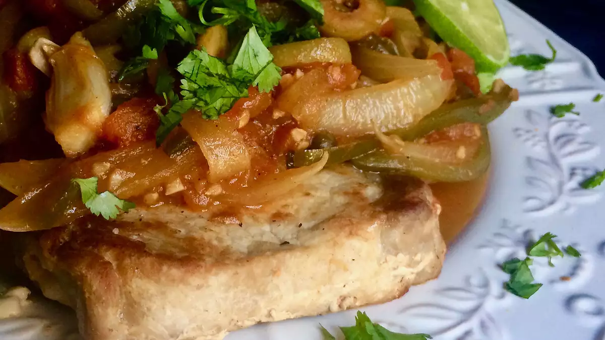

Pork Chops in Veracruz Sauce

Description
Give your weeknight chops a flavor boost with some Veracruz zing! Boneless loin chops simmer in a lively combo of onions, tomatoes, garlic, and fresh herbs, yielding beautiful color and delicious flavor. Sauteed zucchini and steamed rice are excellent dinner sides for this tasty dish.
Ingredients
- salt and ground black pepper to taste
- 4 (1-inch thick) boneless pork loin chops
- 2 tablespoons garlic-infused olive oil
- 2 tablespoons unsalted butter
- 1 medium onion, sliced lengthwise
- 2 cloves garlic, minced
- 2 cups chopped tomatoes, with juices
- ½ cup sliced poblano-stuffed green olives
- 1 tablespoon capers, drained
- 1 jalapeno pepper, seeded and sliced lengthwise
- 2 dried bay leaves
- 2 sprigs fresh thyme
- 2 sprigs fresh Mexican oregano
- 2 tablespoons chopped cilantro
Steps
- Use a paper towel to pat pork chops dry and season with salt and pepper on both sides.
- Heat olive oil and butter in a 12-inch nonstick skillet over medium heat until butter is melted and oil is shimmering. Carefully add pork chops and cook until browned, about 3 minutes per side. Remove from heat and set aside.
- Add onion slices to the same skillet. Saute, stirring frequently, until onion softens, about 3 minutes. Add garlic and stir for about 1 minute. Add tomatoes, olives, capers, jalapeno strips, bay leaves, thyme, and oregano. Bring to a boil and cook, stirring occasionally, about 5 minutes.
- Nestle chops into the vegetable mixture and cover. Reduce heat and simmer until no longer pink in the center, about 12 minutes. Place chops on a serving plate and increase heat to medium-high. Discard bay leaves and herb sprigs. Cook until liquid is reduced and thickened, about 3 minutes.
- Spoon vegetables and sauce over chops. Garnish with cilantro. Squeeze lime juice over all. Serve warm.
Go to Homepage